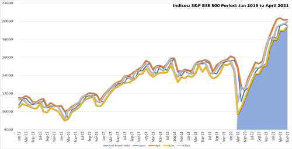

Present Scenario of COVID-19 in India
The first case of COVID-19 in India was reported on January 30, 2020; the index patient was a student
who had returned from Wuhan. Thereafter, only 2 more cases were reported in February. Subsequently,
more cases came to the forefront in the month of March and there has been a surge in the number of
cases since the latter half of April 2020 (Figure 1). As of June 9, 2020, according to the Ministry of
Health and Family Welfare (MoHFW), a total of 266 598 confirmed COVID-19 cases have been reported from
32 states/union territories.2 Most of the cases have been reported from the states of Maharashtra,
Tamil Nadu, Delhi, and Gujarat. Hitherto, the MoHFW have reported 7471 deaths due to COVID-19, translating
into a case-fatality rate of 2.8%.2
The COVID-19 pandemic in India is a part of the worldwide pandemic of coronavirus disease 2019 (COVID-19)
caused by severe acute respiratory syndrome coronavirus 2 (SARS-CoV-2). As of 27 September 2021, according
to official figures,
India has the second-highest number of confirmed cases in the world (after the United States of America)
with 33,678,786 reported
cases of COVID-19 infection and the third-highest number of COVID-19 deaths (after the United States and
Brazil) at 479,133 deaths.
However these figures exhibit severe under-reporting.
The first cases of COVID-19 in India were reported on 30 January 2020 in three towns of Kerala, among
three Indian medical students
who had returned from Wuhan, the epicenter of the pandemic. Lockdowns were announced in Kerala on 23
March, and in the rest of the country on 25 March. On 10 June, India's recoveries exceeded active cases
for the first time.Infection rates started to drop in September, along with the number of new and active
cases. Daily cases peaked mid-September with over 90,000 cases reported per-day,
dropping to below 15,000 in January 2021.A second wave beginning in March 2021 was much more devastating
than the first, with shortages of vaccines, hospital beds, oxygen cylinders and other medical supplies in
parts of the country.[16] By late April, India led the world in new and active cases. On 30 April 2021, it
became the first country to report over 400,000 new cases in a 24-hour period.
Experts stated that the virus may reach an endemic stage in India rather than completely disappear; in
late August 2021, Soumya Swaminathan said India may be in some stage of endemicity where the country
learns to live with the virus.
India began its vaccination programme on 16 January 2021 with AstraZeneca vaccine (Covishield) and the
indigenous Covaxin.Later, Sputnik V and the Moderna vaccine was approved for emergency use too. As of 17
August 2021, the country had administered over 550 million vaccine doses.On 21 October 2021, at 9:47 AM
according to the Co-WIN portal, India crossed 100 crore (1 billion) doses.
Health care and testing
The Union Health Ministry's war room and policy making team in New Delhi decide how coronavirus should be tackled in the country, and consists of the ministry's Emergency Medical Response Unit,
the Central Surveillance Unit (IDSP), the National Centre for Disease Control (NCDC) and experts from three government hospitals among others.In March 2020, India's strategy was focused on cluster-containment, similar to how India contained previous epidemics, as well as "breaking the chain of transmission".52 labs were named capable of virus testing by 13 March.
On 14 March 2020, scientists at the National Institute of Virology (NIV) isolated a strain of the novel coronavirus. India was the fifth country to successfully obtain a pure sample of the virus;isolation of the virus would help towards expediting the development of drugs, vaccines and rapid diagnostic kits in the country.NIV shared two SARS-CoV-2 genome sequences with GISAID.In May, the NIV introduced another test kit for rapid testing.
Initial Testing
Initially, the labs tested samples only from those with a travel history to 12 countries designated
as high-risk, or those who had come in contact with anyone testing positive for the coronavirus, or
showing symptoms as per the government guidelines.On 20 March 2020, the government decided to also include
all pneumonia cases, regardless of travel or contact history.On 9 April, ICMR further revised the testing
strategy and allowed testing of the people showing symptoms for a week in the hotspot areas of the country,
regardless of travel history or local contact to a patient.While the health ministry claimed enough tests were being performed,
experts disagreed, saying that community transmission may go undetected.
Expansion Tests
On 17 March 2020, the health ministry decided to allow accredited private pathology labs to test
for COVID-19.A person could get a COVID-19 test at a private lab after a qualified physician in a
government facility recommended it.[99] Experts said this increased testing may
ultimately result in a correction of the current under-counting and an increase in confirmed cases.
111 additional labs for testing became functional on 21 March.
On 24 March, Mylab Discovery Solutions became the first Indian company to have received regulatory
validation for its RT-PCR tests.In April, Institute of Genomics and Integrative Biology, Delhi had
developed a low cost paper-strip test that could detect COVID-19 within an hour. Each test would cost ₹500.00
(US$6.60).On 13 April, ICMR advised pool testing in low infection areas to increase the capacity of the
testing and save resources. In this process maximum five samples are tested at once and samples are tested individually
only if a pool tests positive.Faulty test kits from China were subsequently returned and future orders cancelled.
By 9 July 2020, 1132 testing labs were functional. Following testing shortages,
non-accredited private laboratories applying for accreditation were also given permission
to test for coronavirus. In September 2020, India had attained the highest number of daily
tests in the world.By 5 May 2021, 2506 testing labs (government and private)
were functional and the total daily national testing capacity reached 1,500,000 tests.
Testing community transmission
Testing for community transmission began on 15 March 2020. 65 government laboratories started testing random samples of people
who exhibit flu-like symptoms and samples from patients without any travel history or contact with infected persons.
As of 18 March, no evidence of community transmission was found after results of 500 random samples tested negative.
Between 15 February and 2 April, 5,911 SARI (Severe Acute Respiratory Illnesses) patients were tested throughout the country of which,
104 tested positive (1.8%) in 20 states and union territories. About 40% of the identified patients did not have a travel history or any history
of contact with a positive patient.The ICMR advised to prioritise containment in the 36 districts of 15 states which had reported positive cases among SARI patients.
In April 2020 WHO placed India in the community transmission stage however in June moved India to
clusters of cases.In October 2020, the health minister admitted to community transmission limited to some states and districts.Until May 2021
, India insisted that clusters of cases remained, and there was no nationwide community transmission.
Daily samples tested
Vaccine development and production
The Indian government infused ₹900 crore (US$120 million) into the Department of Biotechnology in November 2020 to aid the development of a COVID vaccine.
The 2021 budget of India also allocated ₹35,000 crore (US$4.6 billion) for vaccine procurement.
In January 2021, the DCGI initially approved the Oxford–AstraZeneca vaccine, manufactured by the Serum Institute of India (SII) under the trade name "Covishield",and BBV152 (Covaxin), a vaccine
developed by Bharat Biotech in association with the Indian Council of Medical Research and National Institute of Virology.
The approval of Covaxin was met with some concern, as the vaccine had not then completed phase 3 trials.
Due to this status, those receiving Covaxin were required to sign a consent form,while some states chose to
relegate Covaxin to a "buffer stock" and primarily distribute the Oxford–AstraZeneca vaccine.Following the
conclusion of its trial, the DCGI issued a
standard emergency-use authorisation to Covaxin in March 2021.The slogan 'Dawai Bhi, Kadai Bhi' (trnsl ; Vaccination and Precautions both are necessary) was used by the Indian Government.
In April 2021, the DCGI approved the Russian Sputnik V vaccine, which was trialled in India by Dr. Reddy's
Laboratories.The initial shipment of 150 million Sputnik V doses arrived on 1 May, and began to be administered
on 14 May.Domestic manufacturing of
Sputnik V is expected to begin by August 2021, with doses imported from Russia being used in the meantime.
In May 2021, the DCGI approved phase 2 and 3 trials of Covaxin among children 2–18.
In late-June 2021, after the DCGI removed a requirement that all COVID-19 vaccines must be trialed locally before approval (notwithstanding any
approval and wide use in other major countries), the DCGI approved the Moderna vaccine for emergency use.
IMPACT
Displacement of migrant workers
The 2020 lockdown left tens of millions of migrant workers unemployed.With factories and workplaces shut down, many
migrant workers were left with no livelihood.They thus decided to walk hundreds of kilometres to go back to their native
villages, accompanied by their families in many cases.In response, the central and state governments took various measures to help
them.The central government then announced that it had asked state governments to set up immediate relief camps for the
migrant workers returning to their native states,and later issued orders protecting the rights of the migrants.
In its report to the Supreme Court of India on 30 March 2020, the central government stated that the migrant workers,
apprehensive about their survival, moved in the panic created by fake news that the lockdown would last for more than three
months.In early May, the central government permitted the Indian Railways to launch "Shramik Special" trains for the migrant
workers and others stranded,but this move had its own complications.On 26 May, the Supreme Court admitted that the problems of the migrants
had still not been solved and ordered the Centre and States to provide free food, shelter and transport to stranded migrant workers.
Drug shortages
In January 2020, Indian pharma companies raised the issue that drug supplies could be hit if the pandemic situation in China became worse.
India sources about 70% of its pharmaceutical ingredients from China.In March 2020, India restricted export of 26 pharmaceutical ingredients;
this restriction pointed to impending global shortages.During the second wave of the pandemic in India shortages of certain drugs caused some COVID-19 patients to go to the black market.
In April 2021, other important COVID-19 related drugs also faced lowered stocks and sharp rise in cost of raw materials.
Education
On 16 March 2020, the union government ordered the closure of schools and colleges.On 18 March, Central Board of Secondary Education (CBSE)
released revised guidelines for examination centers incorporating social distancing measures.On 19 March, CBSE and JEE examinations for the Indian
Institutes of Technology and other engineering college admissions were postponed.States across the country postponed or cancelled school examinations;
younger students were either automatically promoted or promoted based on prior performance.The Union Public Service Commission also postponed the interview for the Civil Services Examination.
Only a few educational institutions in India have been able to effectively adapt
to e-learning and remote learning; the digital divide is further impacted by serious electricity issues and lack of internet connectivity.
Economy
Due to limited social movement restrictions during the second wave relative to lockdown measures during the first wave, the economic impact of the second
wave to date is less severe than that of the first wave. Socio-economic indicators such as power demand, labour participation, and railway freight traffic fell less
during the second wave as compared to the first wave.The first wave has strengthened domestic economic resilience, visible during the second wave, despite the severity
of the second wave.The Indian Finance Ministry, in their Monthly Economic Review for April 2021 released on 7 May 2021, wrote that "economic activity
has learnt to operate 'with Covid'".Since the beginning of the pandemic in India, poverty has increased, and livelihoods have been affected.
A study by the Azim Premji University in May 2021 documents that around 230 million Indians slipped back into poverty due to the impacts of the pandemic and resultant
lockdown.The impact on female employment was much more severe, with a predicted probability of employment falling by 72% for women compared with 40% for men. The study also found that women who were
in the workforce before the pandemic were seven times more likely to be laid
off than men. And when it came to those who had already lost their jobs, women were 11 times more likely than men not to return to work.

Indian stock markets witnessed a flash crash on 2 March 2020 on the back of the Union Health Ministry's announcement of two new confirmed cases.
On 12 March 2020, Indian stock markets suffered their worst crash since June 2017 after WHO's declaration of the outbreak as a pandemic. On 23 March 2020,
stock markets in India posted its worst losses in history.SENSEX fell 4000 points (13.15%) and NSE NIFTY fell 1150 points (12.98%). However, on 25 March 2020,
one day after a complete 21-day lock-down was announced by the Prime
Minister, SENSEX posted its biggest gains in over a decade.The domestic stock markets have been in a positive rally from October 2020 to April 2021.
Source : WikiPedia For More Click Here